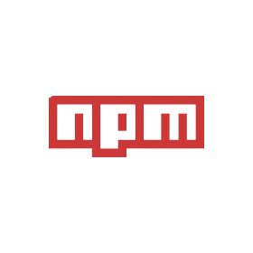

Grunt plugin
Install the grunt-surge plugin, and your project is ready to use grunt deplay.

Gulp plugin
Install surge as a devDependency, and you're ready to use it in your Gulpfile.
Git Hooks
Deploy everytime you push to GitHub, but without any branch juggling.

npm run scripts
Install the surge CLI tool, and your project is ready to use in your package.json.